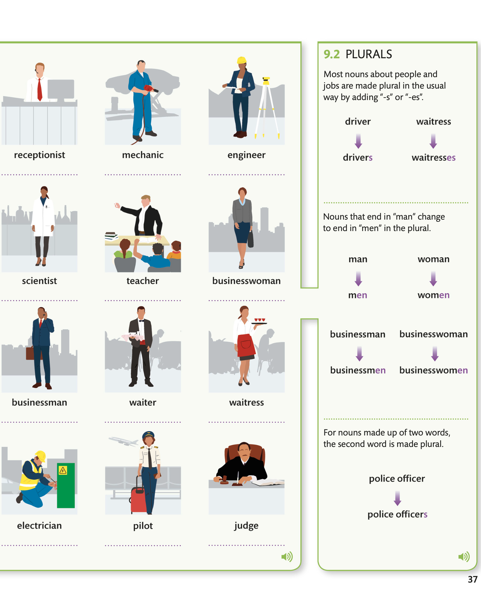

Vocabulary - jobs
8.1 Vocabulary - jobs AUDIO

9.2 PLURALS
Most nouns about people and jobs are made plural in the usual way by adding “-s” or “-es”.
МНОЖЕСТВЕННОЕ МНОЖЕСТВО Большинство существительных, относящихся к людям и профессиям, образуются во множественном числе обычным способом путем добавления «-s» или «-es». AUDIO
МНОЖЕСТВЕННОЕ МНОЖЕСТВО Большинство существительных, относящихся к людям и профессиям, образуются во множественном числе обычным способом путем добавления «-s» или «-es». AUDIO